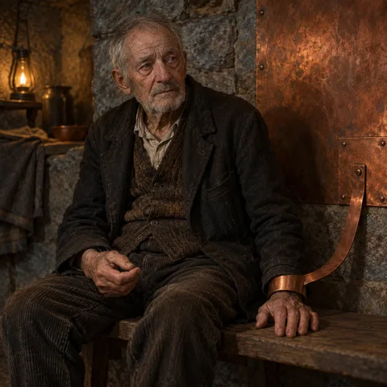

Vous écrivez, le MJ répond
Aucune action imposée. Vous pouvez même préciser votre geste pendant que la réponse arrive.
Jeu de rôle solo · macOS · Windows · Linux
Vous écrivez ce que fait votre personnage. Un maître du jeu vous répond, lance les dés et fait vivre le monde autour de vous.
macOS, Windows et Linux · avec Codex CLI ou Claude Code
Le jeu
Dans TRACE, il n'y a pas de liste d'actions à cocher. Vous décrivez un geste, une réplique ou une prise de risque, comme autour d'une table. Le maître du jeu interprète, raconte la suite et laisse le monde réagir.
Derrière lui, un moteur tient les comptes : les dés, la santé, l'argent, les objets et les trajets sont calculés, pas improvisés. Le récit suit ce qui s'est réellement passé.
Aucune action imposée. Vous pouvez même préciser votre geste pendant que la réponse arrive.
Jets de dés, points de vie, argent, inventaire, trajets : ces valeurs sont calculées par le moteur, jamais inventées au fil du récit.
Chaque partie garde sa table, ses événements et le carnet du MJ. Les personnages retiennent ce que vous avez fait.
Le MJ choisit les moments qui méritent une image. L'illustration suit la scène et reprend le portrait de votre personnage. Avec Codex uniquement.
Vous pouvez remplacer votre dernière action. Ses conséquences sont annulées et l'ancienne version reste consultable.
Cool pour une histoire fluide, strict pour un suivi serré de ce que vous possédez vraiment. Le style se change en cours de partie.
Démo
Vous êtes Alix, aventurière, dans la cour d'un fort tenu par des pillards. Choisissez une action : les dés sont vraiment lancés dans votre navigateur.
Changez ensuite le style du maître du jeu et réclamez une charrette que vous n'avez jamais eue. La différence entre cool et strict se voit tout de suite.
Crépuscule sur le fort des Cendres. Depuis la porte des écuries, une arbalétrière surveille la cour ; elle ne t'a pas repérée. La chapelle est de l'autre côté, et la cour offre peu de couvert. Que fais-tu ?
Scène de démonstration écrite à l'avance. Dans le jeu, vous écrivez librement et le maître du jeu improvise.
Mondes
Chaque campagne a son ton, ses lieux et ses personnages. Quand vous les aurez épuisées, décrivez votre propre monde.
Horreur côtière · novembre 1926
Une lettre signée de votre sœur, enterrée douze ans plus tôt, vous ramène à Kéravel. Dans ce village breton bientôt isolé par la marée, quelqu'un a rallumé la maison familiale.
« Une lampe éclaire la console ; une autre lueur vient du palier. Personne n'est visible. »
Post-apocalypse · cyberpunk mystique
Un monde divisé entre cités corporatistes et communautés dirigées par des IA. Vous êtes ferrailleur du Secteur 7, et porteur accidentel de la Clé.
« Le réveil grésille dans votre planque. Vous avez faim et trois crédits. »
Cyberpunk · mercenaires · satire
Paradise s'élève sur des siècles de constructions. Michel, brute à crête punk et bras mécanique d'assaut, n'a qu'un objectif écrit : aller au Hub. Ensuite, la ville et les choix lui appartiennent.
« L'odeur de friture se mêle au caoutchouc chaud. À toi de décider de la suite. »
Création libre
Décrivez un univers, un personnage et ce qu'il cherche. TRACE écrit une ouverture jouable avec le même moteur, les mêmes règles et le même maître du jeu.
« Retrouver l'anneau avant l'arrivée de l'hiver. »

Télécharger
Choisissez le paquet de votre ordinateur. Tout est inclus, sauf l'assistant qui fait vivre le maître du jeu.
Recommandé pour cet ordinateur
Puce Apple : M1, M2, M3, M4 et suivantes. macOS 15 ou plus récent.
Télécharger le .dmg ou l'archive .zipRecommandé pour cet ordinateur
Processeur Intel. macOS 15 ou plus récent.
Télécharger le .dmg ou l'archive .zipRecommandé pour cet ordinateur
Windows 10 ou 11, 64 bits.
Télécharger le .zipRecommandé pour cet ordinateur
64 bits, glibc 2.35 ou plus récente : Ubuntu 22.04, Debian 12, Fedora récentes.
Télécharger le .tar.gzPython, la base des comptes et tout le reste sont déjà dans le paquet. Rien d'autre à installer.
Le jeu complet : campagnes, création libre, scènes illustrées et portraits générés.
Le même jeu, les mêmes règles et les mêmes campagnes, sans génération de visuels : ni illustration de scène, ni portrait généré. Vous pouvez toujours importer un portrait.
Si les deux sont installés, TRACE prend Codex par défaut ; le choix se change dans l'application.
Installer
Choisissez votre ordinateur. Chaque parcours va de l'assistant au premier lancement, et propose un prompt prêt à copier si vous préférez confier l'installation à un agent.
Pour macOS 15 ou plus récent. Le jeu s'ouvre dans sa propre fenêtre.
Le maître du jeu passe par un assistant en ligne de commande. Un seul suffit. Dans le Terminal, pour Codex CLI :
npm install -g @openai/codex
codex loginOu pour Claude Code :
curl -fsSL https://claude.ai/install.sh | bash
claude auth loginAvec Claude Code, TRACE ne génère ni illustrations ni portraits. Le reste du jeu est identique.
Pour connaître votre processeur : menu Pomme, puis « À propos de ce Mac ». « Puce Apple » correspond à Apple Silicon.
Ouvrez le fichier .dmg, puis glissez TRACE dans le dossier Applications.
L'application n'est pas encore notarisée par Apple, donc macOS la bloque à la première ouverture. Ouvrez Réglages Système → Confidentialité et sécurité, puis cliquez sur « Ouvrir quand même ». Vous pouvez aussi lever le blocage dans le Terminal, pour cette application seulement :
xattr -dr com.apple.quarantine /Applications/TRACE.appAu démarrage, TRACE vérifie que l'assistant répond. Créez ensuite un compte dans l'interface : il n'existe que sur votre Mac. Le menu TRACE → Assistant permet de passer de Codex à Claude Code.
Vos parties sont dans ~/Library/Application Support/TRACE/.
Collez ce texte dans l'agent, sur le Mac où vous voulez jouer. Il s'arrêtera dès qu'une étape demande une action de votre part.
Installe le jeu TRACE sur ce Mac. Procède étape par étape et arrête-toi pour me demander dès qu'une étape exige une action de ma part. Ne saisis jamais de mot de passe ni de code à ma place.
1. Vérifie que macOS est en version 15 ou plus (sw_vers) et note le processeur (uname -m : arm64 ou x86_64). Si macOS est plus ancien, arrête-toi et dis-le-moi.
2. TRACE a besoin d'un assistant en ligne de commande connecté à mon compte : Codex CLI (codex --version, codex login status) ou Claude Code (claude --version, claude auth status). Vérifie lequel est installé et connecté. S'il en manque un, propose de l'installer. Si je ne suis pas connecté, demande-moi de lancer moi-même codex login ou claude auth login. Préviens-moi qu'avec Claude Code le jeu ne génère ni illustrations ni portraits.
3. Télécharge dans ~/Downloads le paquet du processeur :
curl -fL -o ~/Downloads/TRACE.dmg https://github.com/vlefils/trace-releases/releases/latest/download/TRACE-macOS-arm64.dmg
(TRACE-macOS-x86_64.dmg sur un Mac Intel).
4. Monte le DMG avec hdiutil attach, copie TRACE.app dans /Applications avec ditto, puis démonte-le avec hdiutil detach. Si une ancienne TRACE.app existe, vérifie qu'elle est fermée avant de la remplacer. Ne touche jamais à ~/Library/Application Support/TRACE/ : ce dossier contient mes parties et mes comptes.
5. L'application n'est pas notarisée. Si elle porte l'attribut de quarantaine, retire-le sur elle seule :
xattr -dr com.apple.quarantine /Applications/TRACE.app
Ne modifie aucun réglage de sécurité global du Mac.
6. Ouvre TRACE (open -a TRACE) et vérifie qu'une fenêtre s'affiche. En cas d'échec, montre-moi la fin de ~/Library/Application Support/TRACE/logs/desktop.log.
Termine en me disant ce qui a été installé, où, avec quel assistant, et ce qu'il me reste à faire : créer un compte local dans l'interface de TRACE.Pour Windows 10 ou 11, 64 bits. Le jeu s'ouvre dans votre navigateur.
Le maître du jeu passe par un assistant en ligne de commande. Un seul suffit. Dans PowerShell, pour Codex CLI :
npm install -g @openai/codex
codex loginOu pour Claude Code :
irm https://claude.ai/install.ps1 | iex
claude auth loginAvec Claude Code, TRACE ne génère ni illustrations ni portraits. Le reste du jeu est identique.
Faites un clic droit sur l'archive, puis « Extraire tout », vers un dossier à vous comme Documents. Évitez « Program Files » : TRACE n'a pas besoin de droits d'administrateur.
Ouvrez le dossier TRACE extrait et lancez TRACE.exe. L'application n'est pas signée : si « Windows a protégé votre ordinateur » s'affiche, choisissez « Informations complémentaires », puis « Exécuter quand même ».
TRACE vérifie que l'assistant répond, puis ouvre le jeu dans votre navigateur. Une petite fenêtre TRACE reste ouverte : son bouton Assistant… permet de passer de Codex à Claude Code, et la fermer arrête le jeu. Créez ensuite un compte dans l'interface : il n'existe que sur votre PC.
Vos parties sont dans %LOCALAPPDATA%\TRACE\.
Collez ce texte dans l'agent, sur le PC où vous voulez jouer. Il s'arrêtera dès qu'une étape demande une action de votre part.
Installe le jeu TRACE sur ce PC Windows, avec PowerShell. Procède étape par étape et arrête-toi pour me demander dès qu'une étape exige une action de ma part. Ne saisis jamais de mot de passe ni de code à ma place.
1. Vérifie que Windows est en version 10 ou 11, en 64 bits. Sinon, arrête-toi et dis-le-moi.
2. TRACE a besoin d'un assistant en ligne de commande connecté à mon compte : Codex CLI (codex --version, codex login status) ou Claude Code (claude --version, claude auth status). Vérifie lequel est installé et connecté. S'il en manque un, propose de l'installer. Si je ne suis pas connecté, demande-moi de lancer moi-même codex login ou claude auth login. Préviens-moi qu'avec Claude Code le jeu ne génère ni illustrations ni portraits.
3. Télécharge le paquet dans mon dossier Téléchargements :
Invoke-WebRequest -Uri https://github.com/vlefils/trace-releases/releases/latest/download/TRACE-windows-x86_64.zip -OutFile "$env:USERPROFILE\Downloads\TRACE-windows-x86_64.zip"
4. Extrais l'archive dans mon dossier Documents avec Expand-Archive : elle crée Documents\TRACE. Si ce dossier existe déjà, vérifie que TRACE est fermé avant de le remplacer. Ne touche jamais à %LOCALAPPDATA%\TRACE : ce dossier contient mes parties et mes comptes.
5. Lance Documents\TRACE\TRACE.exe. Le jeu s'ouvre dans le navigateur et une petite fenêtre TRACE reste ouverte : c'est normal. Si Windows affiche « Windows a protégé votre ordinateur », demande-moi de cliquer moi-même sur « Informations complémentaires », puis « Exécuter quand même ». Ne désactive aucune protection de Windows.
6. Vérifie que le jeu démarre. En cas d'échec, montre-moi la fin de %LOCALAPPDATA%\TRACE\logs\desktop.log.
Termine en me disant ce qui a été installé, où, avec quel assistant, et ce qu'il me reste à faire : créer un compte local dans l'interface de TRACE.Pour Linux 64 bits avec glibc 2.35 ou plus récente : Ubuntu 22.04, Debian 12, Fedora récentes. Le jeu s'ouvre dans votre navigateur.
Le maître du jeu passe par un assistant en ligne de commande. Un seul suffit. Dans un terminal, pour Codex CLI :
npm install -g @openai/codex
codex loginOu pour Claude Code :
curl -fsSL https://claude.ai/install.sh | bash
claude auth loginAvec Claude Code, TRACE ne génère ni illustrations ni portraits. Le reste du jeu est identique.
Dans un terminal, depuis votre dossier personnel :
curl -fL -O https://github.com/vlefils/trace-releases/releases/latest/download/TRACE-linux-x86_64.tar.gz
tar -xzf TRACE-linux-x86_64.tar.gzDémarrez le jeu depuis le dossier extrait. La seconde commande, facultative, l'ajoute au menu des applications.
./TRACE/trace
./TRACE/install.shSans environnement graphique, ./TRACE/trace --headless affiche l'adresse à ouvrir.
TRACE vérifie que l'assistant répond, puis ouvre le jeu dans votre navigateur. Une petite fenêtre TRACE reste ouverte : son bouton Assistant… permet de passer de Codex à Claude Code, et la fermer arrête le jeu. Créez ensuite un compte dans l'interface : il n'existe que sur votre ordinateur.
Vos parties sont dans ~/.local/share/TRACE/.
Collez ce texte dans l'agent, sur l'ordinateur où vous voulez jouer. Il s'arrêtera dès qu'une étape demande une action de votre part.
Installe le jeu TRACE sur cet ordinateur Linux. Procède étape par étape et arrête-toi pour me demander dès qu'une étape exige une action de ma part. Ne saisis jamais de mot de passe ni de code à ma place.
1. Vérifie que le processeur est x86_64 (uname -m) et que la glibc est en version 2.35 ou plus (ldd --version). Sinon, arrête-toi et dis-le-moi.
2. TRACE a besoin d'un assistant en ligne de commande connecté à mon compte : Codex CLI (codex --version, codex login status) ou Claude Code (claude --version, claude auth status). Vérifie lequel est installé et connecté. S'il en manque un, propose de l'installer. Si je ne suis pas connecté, demande-moi de lancer moi-même codex login ou claude auth login. Préviens-moi qu'avec Claude Code le jeu ne génère ni illustrations ni portraits.
3. Télécharge puis extrais le paquet dans mon dossier personnel :
curl -fL -o ~/TRACE-linux-x86_64.tar.gz https://github.com/vlefils/trace-releases/releases/latest/download/TRACE-linux-x86_64.tar.gz
tar -xzf ~/TRACE-linux-x86_64.tar.gz -C ~
Si ~/TRACE existe déjà, vérifie que TRACE est fermé avant de le remplacer. Ne touche jamais à ~/.local/share/TRACE : ce dossier contient mes parties et mes comptes.
4. Lance ~/TRACE/install.sh pour ajouter TRACE au menu des applications.
5. Lance ~/TRACE/trace. Le jeu s'ouvre dans le navigateur et une petite fenêtre TRACE reste ouverte : c'est normal. Sans environnement graphique, utilise ~/TRACE/trace --headless et donne-moi l'adresse affichée.
6. Vérifie que le jeu démarre. En cas d'échec, montre-moi la fin de ~/.local/share/TRACE/logs/desktop.log.
Termine en me disant ce qui a été installé, où, avec quel assistant, et ce qu'il me reste à faire : créer un compte local dans l'interface de TRACE.Questions
L'application ne demande ni abonnement ni paiement. Le maître du jeu utilise votre propre compte Codex ou Claude : ses capacités et ses quotas s'appliquent.
Le jeu est le même. Seul Codex sait produire des images : avec Claude Code, il n'y a ni illustration de scène ni portrait généré, et l'interface vous le rappelle. Vous pouvez changer d'assistant dans l'application sans perdre vos parties.
Non. L'application s'installe sans dépendance, mais le maître du jeu est un modèle en ligne. Il faut une connexion pendant la partie.
Sur votre ordinateur : ~/Library/Application Support/TRACE/ sur Mac, %LOCALAPPDATA%\TRACE\ sur Windows, ~/.local/share/TRACE/ sur Linux. Ce dossier contient les comptes, les parties, les notes du maître du jeu et les illustrations. Remplacer l'application par une version plus récente ne le modifie pas.
C'est attendu au premier lancement : l'application n'est ni notarisée par Apple ni signée pour Windows. Sur Mac, passez par Réglages Système → Confidentialité et sécurité → Ouvrir quand même. Sur Windows, choisissez « Informations complémentaires » puis « Exécuter quand même ».
Sur Mac, ouvrez le menu TRACE → Assistant ; sur Windows et Linux, le bouton Assistant… de la fenêtre TRACE. Vous pouvez y choisir Codex ou Claude Code et indiquer l'emplacement de la commande. Vérifiez aussi que codex login status ou claude auth status vous montre connecté.